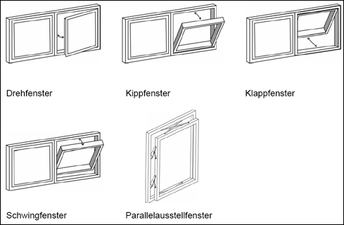
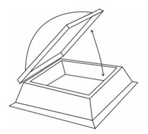

sind Bauteile zur natürlichen Beleuchtung. Hierzu zählen auch Schaufenster. Darüber hinaus können sie sowohl der Sichtverbindung nach außen als auch der Lüftung dienen.
Beispiele für Bauarten von Fenstern siehe Abbildung 1.

Abb. 1: Bauarten von Fenstern
sind diejenigen beweglichen Bauteile, die Öffnungen von Fenstern oder Oberlichtern schließen oder freigeben. Flügel sind z. B. Drehflügel, Kippflügel, Klappflügel, Schwingflügel, Wendeflügel und Schiebeflügel.
sind Fenster und Oberlichter, wenn die für die Bewegung der Flügel erforderliche Energie vollständig oder teilweise von Kraftmaschinen zugeführt wird.
sind Flügel dann, wenn sie vom festen Bedienungsstandort aus nicht oder nicht vollständig zu übersehen sind; ferngesteuert sind auch Flügel, deren Antrieb durch Steuerimpulse gesteuert wird, die z. B. von einem Sender (z. B. mobile Fernbedienung) oder Sensor (z. B. Windsensor) ausgehen.
ist der Raum, in dem die Flügel Öffnungs- und Schließbewegungen ausführen.
ist ein Glas, das durch besondere Behandlung wie Vorspannen oder Laminieren bruchsicher ist und die Verletzungsgefährdung im Falle einer Beschädigung verhindert oder minimiert. Keine ausreichenden Sicherheitseigenschaften haben u. a. Floatglas, Profilbauglas mit und ohne Drahteinlage, Ornamentgläser, teilvorgespanntes Glas und Draht(spiegel)glas in monolithischer Form.
sind selbstklebende Folien, die nachträglich auf plane Glasflächen fachgerecht aufgeklebt werden und in Kombination mit der entsprechenden Glasscheibe die Sicherheitseigenschaften verbessern können.
nach Arbeitsstättenverordnung sind in Dach- bzw. Deckenflächen integrierte Bauteile - im Weiteren Dachoberlicht genannt -, die der natürlichen Beleuchtung und ggf. der Lüftung dienen. Dachoberlichter werden oft mit einem Rauch-Wärme-Abzug (RWA) kombiniert. Ausführungen von Dachoberlichtern sind z. B. Lichtkuppeln, Lichtbänder und Lichtplatten. Obere Teile von Fenstern und Türen, die umgangssprachlich als Oberlichter bezeichnet werden, sind im Sinne dieser Regel Fenster.

Abb. 2: Dachoberlicht (Lichtkuppel)
sind Wände mit lichtdurchlässigen Flächen, die bis in die Nähe des Fußbodens reichen und aus Glas, Kunststoff oder anderen transparenten Materialien bestehen. Sie sind in der Regel feststehende Raum- oder Gebäudeabschlüsse, die keine Lüftungsfunktion haben. Sie können aber auch aus einzelnen mobilen Bauteilen bestehen bzw. aufgebaut werden.
sind Balkone, die ausschließlich für Reinigungs- und Instandhaltungsarbeiten am Gebäude vorgesehen sind.
sind Vorrichtungen, z. B. bewegliche Steigleitern mit innen liegenden Zwischenpodesten, Reinigungsbrücken oder Fassadenaufzüge, die zum Gebäude gehören, am Gebäude verbleiben und für Reinigungs- und Instandhaltungsarbeiten am Gebäude oder an Gebäudeeinrichtungen benutzt werden.
(Totmannsteuerung) ist eine Steuereinrichtung, die eine kontinuierliche Betätigung der Steuereinrichtung für die Flügelbewegung erfordert.
sind Vertikalverglasungen, tragende Glasbrüstungen mit Handlauf oder Geländerausfachungen aus Glas, die ein Abstürzen der Beschäftigten verhindern.
umfassen alle Maßnahmen zur Bewahrung des Soll-Zustandes (Wartung), zur Feststellung und Beurteilung des Ist-Zustandes (Inspektion) und zur Wiederherstellung des Soll-Zustandes (Instandsetzung) oder Verbesserung des Ist-Zustandes.